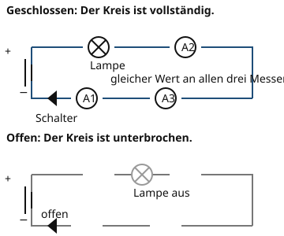

Der geschlossene Stromkreis
Warum ist das wichtig?
Du drückst auf den Schalter deiner Fahrradlampe, aber sie bleibt dunkel. Der Akku ist voll, die Lampe ist heil. Woran liegt es? Meistens ist der Weg für den Strom irgendwo unterbrochen – ein Kabel ist locker, der Schalter ist offen oder eine Verbindung fehlt. Damit eine Lampe leuchtet, muss der Strom einen geschlossenen Kreis finden.
Das steckt dahinter
Ein Stromkreis besteht aus vier Teilen: einer Quelle (Batterie oder Netzgerät), Leitungen (Kabel), einem Verbraucher (zum Beispiel einer Lampe) und einem Schalter. Nur wenn alle Teile miteinander verbunden sind, kann der Strom fließen. Ist der Kreis an einer Stelle offen, fließt nirgends Strom.

Oben ist der Kreis geschlossen, unten ist er am Schalter unterbrochen. Die drei Strommesser zeigen oben denselben Wert.
Quelle: eigene Zeichnung. Lizenz: CC-BY-4.0.- Stromkreis
Ein Stromkreis ist ein geschlossener Weg, auf dem elektrische Ladungen von der Quelle durch den Verbraucher und wieder zurück fließen können.
Der Strom wird im Verbraucher nicht verbraucht. Die Lampe wandelt elektrische Energie in Licht und Wärme um, aber die Ladungen fließen weiter. Deshalb ist die Stromstärke vor der Lampe genauso groß wie hinter der Lampe.
Ein Beispiel
Die Taschenlampe
In einer Taschenlampe sitzen zwei Batterien, eine Lampe und ein Schalter. Du schließt den Schalter: Der Weg von der Batterie über die Lampe und zurück ist vollständig. Die Lampe leuchtet. Öffnest du den Schalter, ist der Weg unterbrochen, und die Lampe geht aus.
| Schalter geschlossen | Der Kreis ist geschlossen, die Lampe leuchtet. |
|---|---|
| Schalter offen | Der Kreis ist unterbrochen, es fließt kein Strom. |
Übung
Übung
Lösung
Richtige Antwort: Batterie – Sie liefert die elektrische Spannung.; Lampe – Sie wandelt elektrische Energie in Licht und Wärme um.; Schalter – Er öffnet und schließt den Stromkreis.; Kabel – Es verbindet die Bauteile und leitet den Strom.; Sicherung – Sie unterbricht den Stromkreis bei zu großer Stromstärke.
Jedes Bauteil hat eine eigene Aufgabe. Die Quelle liefert die Spannung, die Leitungen führen den Strom, der Verbraucher wandelt Energie um, und der Schalter steuert den Kreis.
Mehr dazu:
Übung
Drei Beispielaufgaben, jede mit ihrer Lösung:
Aufgabe Nr. 1
Welche Aufgabe hat Batterie im Stromkreis?
Tipp
Überlege, was das Bauteil im Stromkreis bewirkt.
Lösung
- Batterie: Sie liefert die elektrische Spannung und treibt den Strom an.
Richtige Antwort: Sie liefert die elektrische Spannung und treibt den Strom an.
Aufgabe Nr. 2
Welche Aufgabe hat Kabel im Stromkreis?
Tipp
Überlege, was das Bauteil im Stromkreis bewirkt.
Lösung
- Kabel: Es verbindet die Bauteile und leitet den Strom.
Richtige Antwort: Es verbindet die Bauteile und leitet den Strom.
Aufgabe Nr. 3
Welche Aufgabe hat Sicherung im Stromkreis?
Tipp
Überlege, was das Bauteil im Stromkreis bewirkt.
Lösung
- Sicherung: Sie unterbricht den Stromkreis bei zu großer Stromstärke.
Richtige Antwort: Sie unterbricht den Stromkreis bei zu großer Stromstärke.
Übung
Lösung
Stromkreis A richtige Antwort
In A ist der Weg von der Batterie über die Lampe und zurück vollständig. Der Strom kann fließen.
Stromkreis B
In B ist der Schalter geöffnet. An dieser Stelle ist der Weg unterbrochen, deshalb fließt kein Strom.
Strom fließt nur, wenn der Kreis an keiner Stelle unterbrochen ist. In B fehlt die Verbindung am Schalter.
Mehr dazu:
Übung
Lösung
Richtige Antwort: Die Aussage stimmt nicht.
Die Lampe wandelt Energie um, aber sie entnimmt dem Kreis keine Ladungen. Im unverzweigten Kreis ist die Stromstärke vor und hinter der Lampe gleich groß.
Mehr dazu: